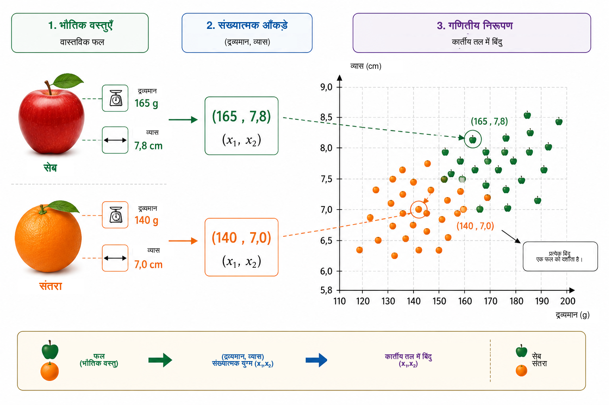
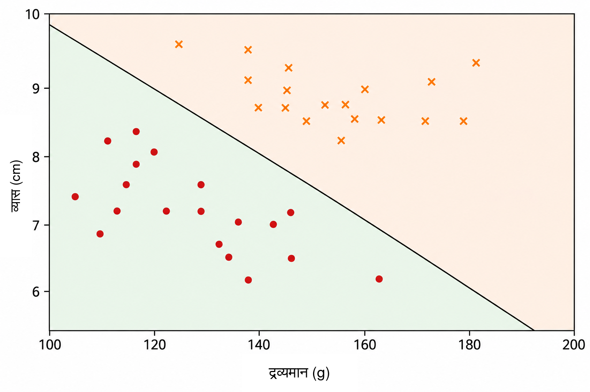
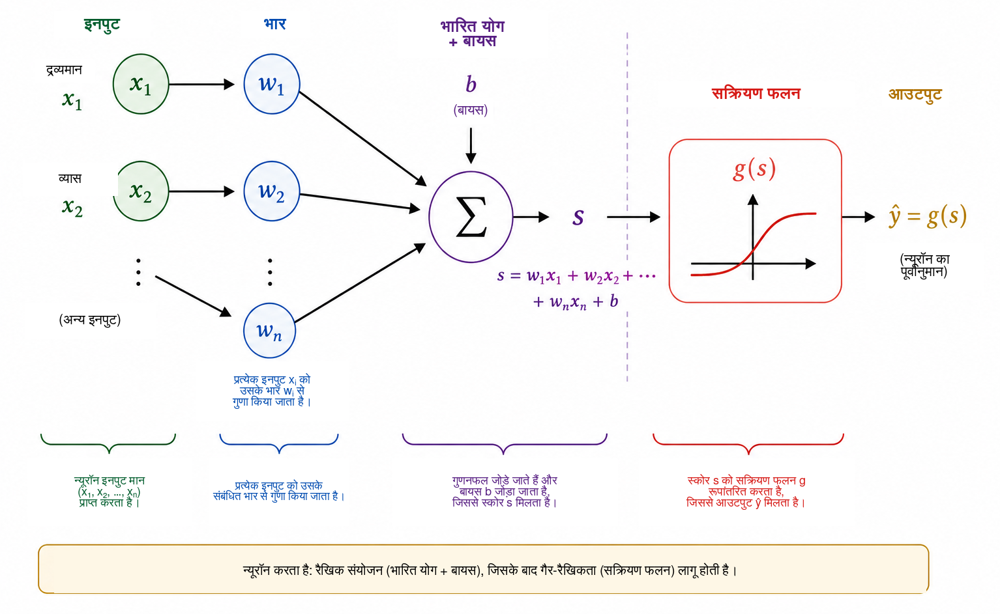
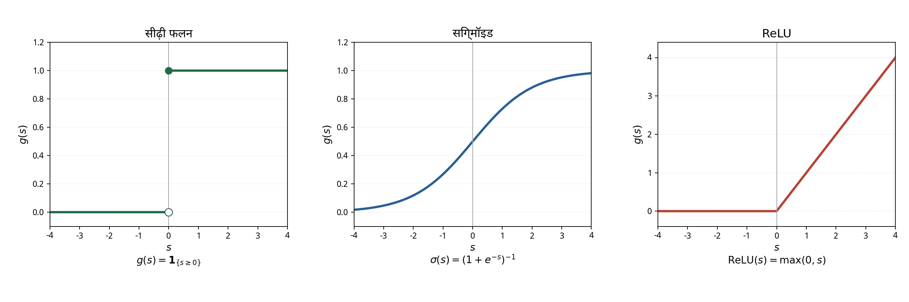
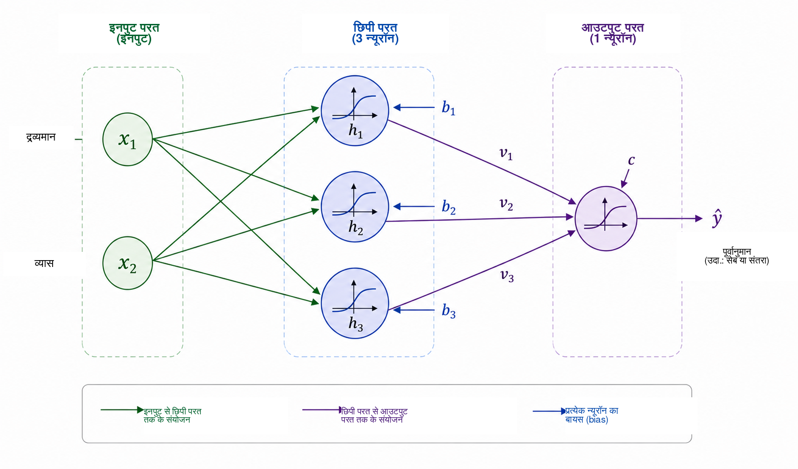
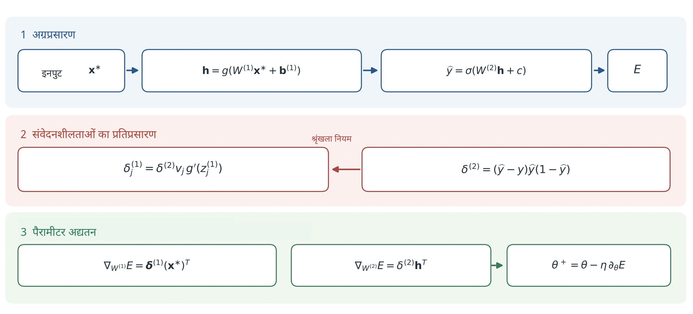
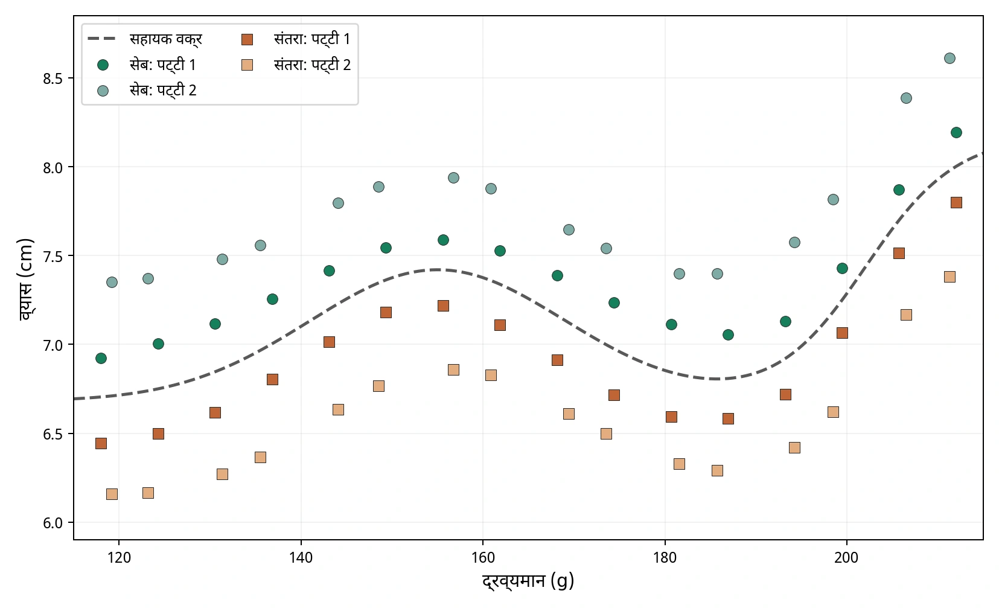
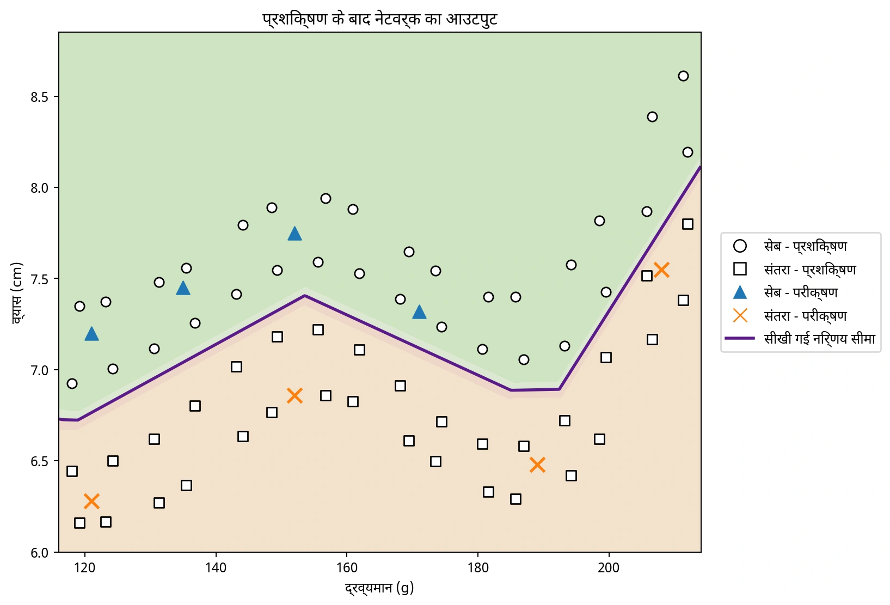

कंप्यूटर कब सीख सकता है?
हम रोज़मर्रा के जीवन में लगभग बिना ध्यान दिए वर्गीकरण संबंधी निर्णय लेते रहते हैं। किसी फल को देखकर हम शीघ्र पहचान लेते हैं कि वह सेब है या संतरा; मोबाइल पर संदेश आने पर हम सामान्य बातचीत और अवांछित विज्ञापन में अंतर कर लेते हैं; चिकित्सा विश्लेषण में कई मापों को मिलाकर किसी निर्णय में सहायता ली जा सकती है; और वित्तीय संस्थानों में ऋण देने से पहले अनेक प्रकार की सूचनाओं का मूल्यांकन किया जाता है। इन सभी उदाहरणों में उत्तर प्राप्त करने के लिए कई विशेषताओं को एक साथ देखा जाता है।
बहुत-से पारंपरिक कंप्यूटर प्रोग्रामों में इस उत्तर तक पहुँचने वाले नियम प्रोग्रामर द्वारा स्पष्ट रूप से लिखे जाते हैं। जब नियम ज्ञात हों और उन्हें साफ़ शब्दों में व्यक्त किया जा सके, तब यह तरीका अच्छी तरह काम करता है। लेकिन जब आँकड़ों में बहुत अधिक विविधता हो, या अच्छे निर्णय के लिए आवश्यक सभी शर्तों को पहले से लिखना कठिन हो, तब यह तरीका सीमित हो जाता है। इससे एक स्वाभाविक प्रश्न उठता है:
क्या हम ऐसा प्रोग्राम बना सकते हैं जो निर्णय का नियम तैयार रूप में पाने के बजाय उदाहरणों से स्वयं सीख सके?
यह मशीन लर्निंग की केंद्रीय धारणाओं में से एक है। मशीन लर्निंग कृत्रिम बुद्धिमत्ता का वह क्षेत्र है जिसमें डेटा से मॉडल समायोजित करने की विधियों का अध्ययन किया जाता है । पर्यवेक्षित अधिगम की समस्या में एल्गोरिथ्म को सही उत्तरों के साथ उदाहरण दिए जाते हैं, और हमारा उद्देश्य ऐसा मॉडल प्राप्त करना होता है जो प्रशिक्षण में न देखे गए उदाहरणों के लिए भी उपयोगी पूर्वानुमान दे सके। इस उद्देश्य के लिए विकसित अनेक मॉडलों में कृत्रिम तंत्रिका नेटवर्क ने चित्र पहचान, भाषा प्रसंस्करण, संकेत विश्लेषण और समय-श्रृंखला पूर्वानुमान जैसे अनुप्रयोगों में विशेष महत्व प्राप्त किया है ।
गणित, संगणना और विद्यालयी शिक्षा के बीच सेतु के रूप में तंत्रिका नेटवर्क के उपयोग पर Professor de Matemática Online में Batista और Martins पहले ही चर्चा कर चुके हैं। उन्होंने शिक्षक-शिक्षा, Python और अंकों की पहचान को जोड़ने वाली एक गतिविधि प्रस्तुत की। वर्तमान लेख एक पूरक मार्ग अपनाता है। हमारा मुख्य उद्देश्य एक छोटे तंत्रिका नेटवर्क की आंतरिक गणितीय संरचना को स्पष्ट करना है: विश्लेषणात्मक ज्यामिति से आरंभ करके हम क्रमशः ग्रेडिएंट की गणना और प्रतिप्रसारण के प्रत्यक्ष कार्यान्वयन तक पहुँचेंगे।
आधुनिक अनुप्रयोगों की जटिलता के बावजूद, तंत्रिका नेटवर्क का गणितीय मूल अपेक्षाकृत परिचित विचारों से समझाया जा सकता है। मूल रूप में तंत्रिका नेटवर्क फलनों का एक संयोजन है, जिसके पैरामीटर डेटा से समायोजित किए जाते हैं। हम एक सरल ज्यामितीय समस्या से आरंभ करेंगे, एक विभाजक सीधी रेखा को कृत्रिम न्यूरॉन के रूप में पुनर्व्याख्यायित करेंगे, कई न्यूरॉनों को जोड़ेंगे, सक्रियण फलनों की भूमिका समझेंगे और दिखाएँगे कि अवकलजों की सहायता से नेटवर्क के पैरामीटर स्वचालित रूप से कैसे समायोजित किए जा सकते हैं। अंत में हम Python में एक पूरा छोटा उदाहरण लागू करेंगे, जिसमें समीकरणों और कोड के बीच सीधा संबंध बना रहेगा।
समस्या का गणितीय निरूपण
तंत्रिका नेटवर्क कैसे काम करता है, यह समझने के लिए हम जानबूझकर एक सरल समस्या से शुरुआत करते हैं: सेब और संतरे में अंतर करना। किसी फल में रंग, द्रव्यमान, व्यास, बनावट और सुगंध जैसी अनेक विशेषताएँ हो सकती हैं, जिनका उपयोग इस कार्य में किया जा सकता है। किंतु एक प्रारंभिक गणितीय मॉडल को यह सारी जटिलता शामिल करने की आवश्यकता नहीं है। हम केवल दो ऐसी राशियाँ चुनेंगे जिन्हें आसानी से मापा जा सकता है: ग्राम में द्रव्यमान और सेंटीमीटर में व्यास।
इस प्रकार प्रत्येक फल को एक क्रमित युग्म से दर्शाया जाएगा \[(x_1,x_2),\] जहाँ \[x_1=\text{द्रव्यमान} \qquad\text{और}\qquad x_2=\text{व्यास}.\]
अतः युग्म \((155,\;7.2)\) ऐसे फल को दर्शाता है जिसका द्रव्यमान \(155\) g और व्यास \(7.2\) cm है। भौतिक वस्तु को दो संख्यात्मक मापों से बदलने पर हम प्रत्येक फल को कार्तीय तल के एक बिंदु से जोड़ देते हैं: पहला निर्देशांक उसका द्रव्यमान और दूसरा उसका व्यास बताता है। चित्र 1 सेब और संतरे के एक काल्पनिक समूह के लिए इस निरूपण को दर्शाता है।

यह रूपांतरण समस्या के दिखाई देने वाले स्वरूप को बदल देता है। सीधे यह पूछने के बजाय कि सेब या संतरे को कैसे पहचाना जाए, हम एक ज्यामितीय प्रश्न पूछ सकते हैं: तल में दोनों वर्गों के बिंदुओं को कैसे अलग किया जाए? दृष्टिकोण का यह परिवर्तन मशीन लर्निंग में मूलभूत है। किसी एल्गोरिथ्म द्वारा संसाधित किए जाने से पहले चित्रों, पाठ, ध्वनि और प्रयोगात्मक संकेतों को संख्यात्मक निरूपण में बदलना पड़ता है। हमारे उदाहरण में प्रत्येक वस्तु के केवल दो निर्देशांक हैं; वास्तविक अनुप्रयोगों में किसी निरूपण में सैकड़ों, हज़ारों या लाखों अवयव हो सकते हैं। सिद्धांत वही रहता है: प्रत्येक उदाहरण को संख्याओं के एक समूह से जोड़ा जाता है, और मॉडल ऐसा नियम खोजता है जो इस निरूपण को वांछित उत्तर से जोड़ सके।
हम सबसे सरल उपलब्ध ज्यामितीय नियम से शुरुआत करते हैं और पूछते हैं कि क्या एक ही सीधी रेखा सेब के बिंदुओं को संतरे के बिंदुओं से पर्याप्त रूप से अलग कर सकती है।
वर्गीकारक के रूप में एक सीधी रेखा
जब प्रत्येक फल को कार्तीय तल में एक बिंदु के रूप में निरूपित कर दिया जाता है, तब वर्गीकरण एक ज्यामितीय समस्या बन जाता है: क्या कोई सीधी रेखा सेबों को संतरों से अलग कर सकती है? यह प्रश्न मशीन लर्निंग की एक महत्वपूर्ण श्रेणी, रैखिक वर्गीकारकों, की मूल धारणा व्यक्त करता है।
चित्र 2 की तरह डेटा के बीच से गुजरती एक रेखा पर विचार करें। यह तल को दो अर्धतलों में विभाजित करती है। यदि अधिकांश सेब एक ओर और अधिकांश संतरे दूसरी ओर हों, तो किसी नए फल की रेखा के सापेक्ष स्थिति को वर्गीकरण नियम के रूप में उपयोग किया जा सकता है। फल का द्रव्यमान और व्यास मापने के बाद हम उसे एक बिंदु के रूप में रखते हैं और देखते हैं कि वह रेखा के किस ओर स्थित है।

कार्तीय तल \((x_1,x_2)\) में एक रेखा को इस प्रकार लिखा जा सकता है \[w_1x_1+w_2x_2+b=0, \qquad (w_1,w_2)\neq(0,0).\]
सदिश \((w_1,w_2)\) रेखा पर लंबवत होता है और इसलिए उसकी दिशा निर्धारित करता है, जबकि पैरामीटर \(b\) उसकी स्थिति निर्धारित करने में योगदान देता है। इस निरूपण में थोड़ी पुनरावृत्ति है: यदि \(w_1\), \(w_2\) और \(b\) को एक ही अशून्य नियतांक से गुणा किया जाए, तो वही रेखा प्राप्त होती है। इसलिए सीमा का वर्णन करने वाले पैरामीटर अद्वितीय नहीं हैं। उनका संख्यात्मक अर्थ चर की मापनी पर भी निर्भर करता है। चूँकि द्रव्यमान ग्राम में और व्यास सेंटीमीटर में मापा जाता है, इसलिए अलग-अलग इकाइयों को ध्यान में रखे बिना \(w_1\) और \(w_2\) के परिमाणों की सीधी तुलना नहीं करनी चाहिए।
रेखा का समीकरण स्वयं यह निर्धारित करने का सरल तरीका देता है कि कोई बिंदु सीमा के किस ओर है। हम स्कोर परिभाषित करते हैं \[s(x_1,x_2)=w_1x_1+w_2x_2+b.\]
यदि \(s(x_1,x_2)=0\) है, तो बिंदु रेखा पर है। यदि \(s(x_1,x_2)>0\) है, तो वह एक अर्धतल में है; यदि \(s(x_1,x_2)<0\) है, तो वह दूसरे अर्धतल में है। यदि हम तय करें कि धनात्मक स्कोर सेब और ऋणात्मक स्कोर संतरे को दर्शाते हैं, तो निर्णय नियम होगा \[\begin{cases} s(x_1,x_2)\geq 0 & \Longrightarrow \text{सेब},\\ s(x_1,x_2)<0 & \Longrightarrow \text{संतरा}. \end{cases}\]
उदाहरण के लिए, निम्न सीमा पर विचार करें \[w_1=\frac{1}{10}, \qquad w_2=2, \qquad b=-30.\] \(160\) g द्रव्यमान और \(7.8\) cm व्यास वाले फल के लिए \[\begin{aligned} s &=\frac{1}{10}\times160+2\times7.8-30\\ &=16+15.6-30\\ &=1.6. \end{aligned}\] चूँकि स्कोर धनात्मक है, बिंदु उस अर्धतल में आता है जिसे हमने सेब से जोड़ा है। अतः यह वर्गीकारक फल को सेब कहेगा।
\(w_1\), \(w_2\) और \(b\) का हर चयन अच्छा वर्गीकरण नहीं देता। कुछ रेखाएँ दोनों समूहों को खराब ढंग से अलग करती हैं, जबकि अन्य कम त्रुटियाँ करती हैं। सीखने की समस्या का अर्थ है पहले से वर्गीकृत उदाहरणों का उपयोग करके ऐसे पैरामीटर निर्धारित करना जो मॉडल की त्रुटि के किसी माप को कम करें। रेखा की स्थिति को सीधे प्रोग्राम करने के बजाय हम चाहते हैं कि एल्गोरिथ्म डेटा से उसके गुणांक स्वयं समायोजित करे।
एक ही रेखा तब पर्याप्त हो सकती है जब वर्ग लगभग रैखिक रूप से पृथक किए जा सकें। अधिक जटिल डेटा के लिए गैर-रैखिक सीमा आवश्यक हो सकती है। इस सीमा को पार करने से पहले हम अभी बनाए गए वर्गीकारक को गणना की एक मूल इकाई के रूप में पुनर्व्याख्यायित करेंगे: कृत्रिम न्यूरॉन।
कृत्रिम न्यूरॉन
पिछले अनुभाग में अभिव्यक्ति \[s=w_1x_1+w_2x_2+b\] का उपयोग यह निर्धारित करने के लिए किया गया कि किसी फल का बिंदु रेखा के किस ओर है। यही अभिव्यक्ति कृत्रिम न्यूरॉन द्वारा की जाने वाली गणना की पहली अवस्था भी मानी जा सकती है। एक न्यूरॉन संख्यात्मक इनपुट लेता है, उन्हें भार और बायस की सहायता से संयोजित करता है और फिर आउटपुट प्राप्त करने के लिए एक गणितीय फलन लागू करता है।
हमारे उदाहरण में इनपुट द्रव्यमान \(x_1\) और व्यास \(x_2\) हैं। प्रत्येक इनपुट को भार कहलाने वाले एक पैरामीटर से गुणा किया जाता है; गुणनफलों को नियत पद \(b\) के साथ जोड़ा जाता है, जिसे बायस कहते हैं। चित्र 3 इस गणना को योजनात्मक रूप से दिखाता है।

भार यह निर्धारित करते हैं कि इनपुट में परिवर्तन से स्कोर किस प्रकार बदलता है। यदि \(x_2\) और अन्य सभी राशियाँ स्थिर रखी जाएँ, तो \(x_1\) में परिवर्तन \(\Delta x_1\) स्कोर को \(w_1\Delta x_1\) से बदलता है। इसी प्रकार \(x_2\) में परिवर्तन \(\Delta x_2\) स्कोर को \(w_2\Delta x_2\) से बदलता है। चिन्ह भी महत्वपूर्ण है: धनात्मक भार पर इनपुट बढ़ने से स्कोर बढ़ता है, जबकि ऋणात्मक भार विपरीत प्रभाव देता है। अलग-अलग इकाइयों और मापनी वाले चरों के लिए इस व्याख्या का सावधानी से उपयोग करना चाहिए। इसी कारण व्यावहारिक कार्यान्वयन प्रशिक्षण से पहले इनपुट डेटा को प्रायः सामान्यीकृत या मानकीकृत करते हैं।
बायस \(b\) अफ़ाइन रूपांतरण का नियत पद है। ज्यामितीय रूप से यह निर्णय सीमा को स्थानांतरित करने देता है। यदि \(b=0\) हो, तो \[w_1x_1+w_2x_2=0\] रेखा को मूलबिंदु से गुजरने के लिए बाध्य करता है। बायस होने पर सीमा अन्य स्थानों पर जा सकती है। समान रूप से, जब \(x_1=x_2=0\) हो, तो स्कोर केवल \(s=b\) होता है।
स्कोर का ही अंतिम न्यूरॉन आउटपुट होना आवश्यक नहीं है। सामान्यतः उस पर एक सक्रियण फलन \(g\) लगाया जाता है: \[\widehat{y}=g(s)=g\left(w_1x_1+w_2x_2+b\right).\] इस प्रकार गणना की दो अवस्थाएँ हैं, \[\begin{aligned} s &= w_1x_1+w_2x_2+b,\\[4pt] \widehat{y} &= g(s). \end{aligned}\]
पिछले अनुभाग के पैरामीटर लेने पर \(s=1.6\) मिलता है। यदि हम सोपान फलन चुनें \[g(s)= \begin{cases} 1, & s\geq0,\\ 0, & s<0, \end{cases}\] तो \(\widehat{y}=g(1.6)=1\)। हमारी परंपरा के अनुसार फल को सेब वर्ग दिया जाएगा। इस सक्रियण में निर्णय \(s=0\) पार करते समय बदलता है, इसलिए वर्ग सीमा ठीक \[w_1x_1+w_2x_2+b=0\] है।
इस प्रकार एक न्यूरॉन समायोज्य पैरामीटरों वाला एक सरल गणितीय वस्तु है। उसका वास्तविक महत्व तब सामने आता है जब अनेक ऐसी इकाइयाँ जोड़ी जाती हैं। नेटवर्क बनाने से पहले हमें यह समझना होगा कि सक्रियण फलन क्यों आवश्यक है।
सक्रियण फलन की आवश्यकता क्यों है?
एक न्यूरॉन पहले अफ़ाइन रूपांतरण से स्कोर निकालता है और उसके बाद सक्रियण फलन लगाता है। यदि तंत्रिका नेटवर्क को जटिल संबंध निरूपित करने हैं तो यह दूसरी अवस्था आवश्यक है। इसे समझने के लिए ऐसा नेटवर्क सोचें जिसमें कोई सक्रियण फलन न हो। तब प्रत्येक इकाई का रूप होगा \[y=w_1x_1+w_2x_2+b.\]
एक आयामी उदाहरण में मान लें कि पहली इकाई \[h=ax+b\] देती है और दूसरी \[y=ch+d\] गणना करती है। प्रतिस्थापन करने पर \[y=c(ax+b)+d=acx+(cb+d),\] जो फिर भी \(x\) का एक अफ़ाइन फलन है। कई आयामों में भी यही बात सत्य है: अफ़ाइन रूपांतरणों का संयोजन स्वयं अफ़ाइन ही रहता है। इसलिए गैर-रैखिक क्रिया के बिना अनेक परतें जोड़ने से नेटवर्क मूल रूप से अधिक अभिव्यंजक नहीं बनता; पूरे संयोजन को एक ही अफ़ाइन रूपांतरण से बदला जा सकता है।
सक्रियण फलन इस सीमा को तोड़ता है। स्कोर \(s\) प्राप्त करने के बाद न्यूरॉन सामान्यतः गैर-रैखिक मानचित्र \[h=g(s)\] लगाता है। जब कई ऐसी इकाइयाँ जोड़ी जाती हैं, तो परिणामी संयोजन को एक अफ़ाइन रूपांतरण में समेटा नहीं जा सकता। इससे नेटवर्क अधिक जटिल निर्णय सीमाएँ बना सकता है।
सबसे सरल सक्रियण सोपान फलन है, \[g(s)= \begin{cases} 1, & s\geq0,\\ 0, & s<0. \end{cases}\] यह द्विआधारी निर्णय देता है और वर्गीकरण को समझने के लिए बहुत उपयोगी है। लेकिन इसका अवकलज \(s\neq0\) के लिए शून्य है और \(s=0\) पर परिभाषित नहीं है। चूँकि ग्रेडिएंट-आधारित प्रशिक्षण पैरामीटरों को किस दिशा में बदलना है यह तय करने के लिए अवकलजों का उपयोग करता है, इसलिए इस प्रशिक्षण विधि के लिए सोपान फलन उपयुक्त नहीं है।
एक विकल्प सिग्मॉइड फलन है, \[\sigma(s)=\frac{1}{1+e^{-s}}.\] यह प्रत्येक वास्तविक संख्या को \(0\) और \(1\) के बीच के मान में बदलता है। बहुत ऋणात्मक \(s\) के लिए आउटपुट \(0\) के निकट और बहुत धनात्मक \(s\) के लिए \(1\) के निकट जाता है; बीच में संक्रमण मृदु है। सिग्मॉइड हर जगह अवकलनीय है और \[\sigma'(s)=\sigma(s)\bigl(1-\sigma(s)\bigr).\] चूँकि इसके आउटपुट \(0\) और \(1\) के बीच होते हैं, इसे द्विआधारी वर्गीकरण की आउटपुट परत में अक्सर उपयोग किया जाता है। उचित हानि फलन वाली संभाव्य व्याख्या में आउटपुट को वर्ग \(1\) की प्रायिकता के अनुमान के रूप में समझा जा सकता है। लेकिन छिपी परतों में सिग्मॉइड कठिनाई पैदा कर सकता है: बड़े परिमाण वाले इनपुट पर इसका अवकलज बहुत छोटा हो जाता है, जो गहरे नेटवर्क में लुप्त होते ग्रेडिएंट की समस्या में योगदान देता है।
छिपी परतों में व्यापक रूप से प्रयुक्त सक्रियण ReLU (Rectified Linear Unit) है, \[\operatorname{ReLU}(s)=\max(0,s) = \begin{cases} 0, & s<0,\\ s, & s\geq0. \end{cases}\] यद्यपि यह दो रैखिक टुकड़ों से बना है, ReLU वैश्विक रूप से रैखिक नहीं है। इसका अवकलज \(s<0\) पर \(0\) और \(s>0\) पर \(1\) है। \(s=0\) पर सामान्य अवकलज मौजूद नहीं होता और सॉफ्टवेयर कार्यान्वयन ग्रेडिएंट के लिए एक परंपरा अपनाते हैं। धनात्मक इनपुट के लिए \(s\) बढ़ने पर अवकलज छोटा नहीं होता, जिससे सिग्मॉइड की एक संतृप्ति-समस्या से बचा जा सकता है।
चित्र 4 इन तीन सक्रियणों की तुलना दिखाता है: सोपान फलन की अचानक छलाँग, सिग्मॉइड का मृदु संक्रमण और ReLU की ढाल में परिवर्तन।

इनके मुख्य गुण नीचे संक्षेप में दिए गए हैं।
| फलन | आउटपुट | अवकलज | सामान्य उपयोग |
|---|---|---|---|
| सोपान | \(\{0,1\}\) | \(s\neq0\) पर शून्य; \(s=0\) पर अपरिभाषित | ऐतिहासिक मॉडल और शिक्षण उदाहरण |
| सिग्मॉइड | \((0,1)\) | प्रत्येक \(s\) के लिए मौजूद | द्विआधारी वर्गीकरण की आउटपुट परत |
| ReLU | \([0,\infty)\) | \(s<0\) पर \(0\) और \(s>0\) पर \(1\) | छिपी परतें |
इन फलनों के विवरण अलग हैं, पर उनकी साझा वैचारिक भूमिका गैर-रैखिकता जोड़ना है। यही गैर-रैखिकता अगले अनुभाग के छोटे नेटवर्क को ऐसे संबंध निरूपित करने देती है जिन्हें एक सीधी रेखा नहीं पकड़ सकती।
आगे पढ़ने के इच्छुक पाठकों के लिए Haykin तंत्रिका नेटवर्क का एक शास्त्रीय विवेचन देते हैं, जबकि Goodfellow, Bengio और Courville सक्रियण फलनों और गहरे नेटवर्क के प्रशिक्षण पर विस्तृत चर्चा करते हैं। Nielsen का मुक्त रूप से उपलब्ध पाठ न्यूरॉन, सक्रियण और सीखने की सहज समझ विकसित करने के लिए विशेष रूप से उपयोगी है।
एक छोटा तंत्रिका नेटवर्क बनाना
अब हम दो इनपुट, तीन न्यूरॉन वाली एक छिपी परत और एक आउटपुट न्यूरॉन वाले नेटवर्क पर विचार करते हैं। इनपुट अभी भी \[x_1=\text{द्रव्यमान}, \qquad x_2=\text{व्यास},\] हैं और दोनों को प्रत्येक छिपे न्यूरॉन में भेजा जाता है, जैसा कि चित्र 5 में दिखाया गया है।

मान लें छिपी परत के आउटपुट \(h_1\), \(h_2\) और \(h_3\) हैं। प्रत्येक न्यूरॉन को वही दो इनपुट मिलते हैं, किंतु उसके अपने भार और बायस होते हैं: \[\begin{aligned} h_1&=g\left(w_{11}x_1+w_{12}x_2+b_1\right),\\[4pt] h_2&=g\left(w_{21}x_1+w_{22}x_2+b_2\right),\\[4pt] h_3&=g\left(w_{31}x_1+w_{32}x_2+b_3\right). \end{aligned}\]
यद्यपि तीनों न्यूरॉन एक ही द्रव्यमान और व्यास प्राप्त करते हैं, उनके पैरामीटर अलग होने से उनके उत्तर अलग हो सकते हैं। प्रशिक्षण के दौरान इन पैरामीटरों को इस प्रकार समायोजित किया जाता है कि मध्यवर्ती सक्रियताएँ वर्गीकरण के लिए उपयोगी बनें।
फिर \(h_1\), \(h_2\) और \(h_3\) को आउटपुट न्यूरॉन में भेजा जाता है, जो \[s_{\mathrm{out}}=v_1h_1+v_2h_2+v_3h_3+c\] गणना करता है और \[\widehat{y}=g_{\mathrm{out}}\left(s_{\mathrm{out}}\right)\] देता है। हमारी द्विआधारी समस्या के लिए हम सिग्मॉइड आउटपुट लेते हैं: \[\widehat{y}=\sigma\left(v_1h_1+v_2h_2+v_3h_3+c\right), \qquad 0<\widehat{y}<1.\]
सेब के लिए \(y=1\) और संतरे के लिए \(y=0\) लेते हुए, \(0.5\) की सीमा से वर्ग निर्णय होगा \[\widehat{y}\geq0.5 \Longrightarrow \text{सेब}, \qquad \widehat{y}<0.5 \Longrightarrow \text{संतरा}.\] इसलिए \(1\) के निकट मान सेब से और \(0\) के निकट मान संतरे से दृढ़ता से जुड़े हैं। जैसा पहले कहा गया, \(\widehat{y}\) को संख्यात्मक रूप से प्रायिकता मानने के लिए मॉडल और प्रशिक्षण के बारे में अतिरिक्त मान्यताएँ आवश्यक हैं। यहाँ प्रयुक्त वर्गीकरण नियम के लिए इसे केवल नेटवर्क का सतत आउटपुट मानना पर्याप्त है।
इस संरचना की केंद्रीय विशेषता मध्यवर्ती निरूपण है \[(x_1,x_2) \longrightarrow (h_1,h_2,h_3) \longrightarrow \widehat{y}.\] नेटवर्क दो विशेषताएँ प्राप्त करता है और अंतिम उत्तर देने से पहले तीन नई राशियाँ बनाता है। ये सक्रियताएँ हाथ से नहीं चुनी जातीं; वे भार और बायस पर निर्भर हैं और इसलिए प्रशिक्षण के साथ बदलती हैं।
छोटा होने पर भी इस नेटवर्क में तेरह समायोज्य पैरामीटर हैं। तीन छिपे न्यूरॉनों में \[3(2+1)=9\] पैरामीटर हैं और आउटपुट न्यूरॉन \[3+1=4\] और जोड़ता है। अतः \[9+4=13.\]
मैट्रिक्स संकेत में यही गिनती और स्पष्ट हो जाती है। परिभाषित करें \[\mathbf{x}= \begin{bmatrix} x_1\\x_2 \end{bmatrix}, \qquad W^{(1)}= \begin{bmatrix} w_{11}&w_{12}\\ w_{21}&w_{22}\\ w_{31}&w_{32} \end{bmatrix}, \qquad \mathbf{b}^{(1)}= \begin{bmatrix} b_1\\b_2\\b_3 \end{bmatrix}.\] तब छिपी परत को संक्षेप में लिखा जा सकता है \[\mathbf{h}=g\left(W^{(1)}\mathbf{x}+\mathbf{b}^{(1)}\right),\] जहाँ \(g\) प्रत्येक अवयव पर अलग-अलग लागू होता है। आउटपुट के लिए \[\widehat{y} = \sigma\left(W^{(2)}\mathbf{h}+b^{(2)}\right),\] जहाँ \[W^{(2)}= \begin{bmatrix} v_1&v_2&v_3 \end{bmatrix}.\]
यह संकेत उस संरचना का पूर्वाभास देता है जो Python प्रोग्राम में दिखाई देगी। जब किसी फल को इनपुट पर दिया जाता है और हम क्रमिक सक्रियताएँ निकालते हुए \(\widehat{y}\) तक पहुँचते हैं, तो इसे अग्र प्रसार या forward pass कहते हैं। अब मुख्य प्रश्न यह है: इन तेरह पैरामीटरों को स्वचालित रूप से कैसे निर्धारित किया जाए ताकि पूर्वानुमान डेटा के अनुरूप हों?
तंत्रिका नेटवर्क कैसे सीखता है?
नेटवर्क के भार और बायस पहले से ज्ञात नहीं होते; उन्हें सही वर्ग-लेबल वाले उदाहरणों से समायोजित किया जाता है। अधिगम में अग्रप्रसारण, हानि की गणना, ग्रेडिएंट की गणना और पैरामीटर अद्यतन बार-बार दोहराए जाते हैं (चित्र 6)। मुख्य बात यह है कि श्रृंखला नियम से हम निकाल सकते हैं कि प्रत्येक भार या बायस में छोटा परिवर्तन हानि को कितना प्रभावित करता है।
पैरामीटर समायोजित करने के लिए पूर्वानुमान और सही उत्तर के अंतर का संख्यात्मक माप चाहिए। इसे हानि फलन कहते हैं। यह प्रत्येक पूर्वानुमान को दंड देता है और भार तथा बायस के विभिन्न मानों की तुलना संभव बनाता है। केवल गलत वर्गीकरण गिनने के विपरीत, सतत हानि यह भेद करती है कि कौन-सा पूर्वानुमान लक्ष्य के अधिक निकट है और इसका अवकलज प्रशिक्षण की दिशा बताता है।
\(140\) g द्रव्यमान और \(7.0\) cm व्यास वाले संतरे (\(y=0\)) पर विचार करें। नेटवर्क का आउटपुट \(\widehat y\in(0,1)\) लिखते हुए एक उदाहरण के लिए वर्गीय हानि लेते हैं:
\[\label{eq:perda} E=\frac12(\widehat y-y)^2.\]
यहाँ \(y\) सही वर्ग और \(\widehat y\) पूर्वानुमान है। हानि ऋणात्मक नहीं होती और \(\widehat y\) के \(y\) के पास आने पर शून्य के निकट पहुँचती है। उदाहरण के लिए, संतरे के लिए \(0.80\) और \(0.60\) पूर्वानुमान क्रमशः \(E=0.32\) और \(E=0.18\) देते हैं। \(0.5\) की सीमा पर दोनों को गलत ढंग से सेब कहा जाएगा, किंतु हानि निकटतर पूर्वानुमान को अलग पहचानती है। गुणक \(1/2\) न्यूनतम बिंदु नहीं बदलता, पर अवकलन सरल करता है।
नेटवर्क को एक फल के बजाय अनेक उदाहरणों से सीखना चाहिए, इसलिए उनकी हानियों को संयोजित करते हैं। \(N\) प्रेक्षणों के लिए औसत हानि इस प्रकार परिभाषित है:
\[\label{eq:perda_media} J=\frac1N\sum_{i=1}^{N}E_i.\]
यह औसत प्रशिक्षण समुच्चय पर प्रदर्शन का सार है और पैरामीटर बदलकर इसी को कम करना लक्ष्य है। तथापि, \(J\) का न्यूनतमीकरण नए डेटा पर अच्छे पूर्वानुमान की गारंटी नहीं देता। बीजीय सरलता के कारण मुख्य व्युत्पत्ति में समीकरण perda रखेंगे और आगे इसका ग्रेडिएंट द्विआधारी क्रॉस-एंट्रॉपी से तुलना करेंगे, बिना मूल गणनात्मक प्रयोग को बदले [2, 3]।

यदि \(\theta\) कोई भार अथवा बायस है, तो \(\partial J/\partial\theta\) उस पैरामीटर के सापेक्ष औसत हानि की स्थानीय संवेदनशीलता है। ग्रेडिएंट अवरोह का एक चरण है:
\[\label{eq:descida} \theta_{\mathrm{new}}=\theta_{\mathrm{old}}-\eta\frac{\partial J}{\partial\theta},\qquad \eta>0.\]
अधिगम दर \(\eta\) अद्यतन का परिमाण नियंत्रित करती है। बहुत छोटी दर अभिसरण धीमा कर सकती है, जबकि बहुत बड़ी दर दोलन या अपसरण उत्पन्न कर सकती है। अगले अनुभाग के प्रोग्राम की तरह हर प्रेक्षण के बाद अद्यतन करने पर \(\partial J/\partial\theta\) के स्थान पर \(\partial E_i/\partial\theta\) उपयोग करते हैं। यह यहाँ प्रयुक्त स्टोकेस्टिक ग्रेडिएंट डिसेंट (SGD) है।
–3–1 नेटवर्क में श्रृंखला नियम
चित्र 5 का नेटवर्क लें, जिसमें तीन छिपे न्यूरॉनों पर ReLU और आउटपुट पर सिग्मॉइड है। इनपुट द्रव्यमान (ग्राम) तथा व्यास (सेंटीमीटर) अलग-अलग पैमानों पर हैं। अनुकूलन के संख्यात्मक अनुबंधन को बेहतर करने हेतु प्रत्येक विशेषता \(x_j^{\ast}=(x_j-\mu_j)/\sigma_j\) में बदलते हैं, जहाँ \(\mu_j\) संदर्भ माध्य और \(\sigma_j>0\) संदर्भ मानक विचलन है। फलस्वरूप तुलनीय पैमानों वाले विमाहीन इनपुट मिलते हैं। प्रोग्राम में ये सांख्यिकीय मान केवल प्रशिक्षण डेटा से लिए जाते हैं, ताकि परीक्षण डेटा से सूचना का रिसाव न हो। नीचे के हाथ से किए उदाहरण में अंकगणित सरल करने के लिए निश्चित केंद्र और पैमाने हैं। मानकीकृत इनपुट \(\mathbf{x}^{\ast}=(x_1^{\ast},x_2^{\ast})^{\mathsf T}\) के लिए अग्रप्रसारण है:
\[\label{eq:forward} \begin{aligned} \mathbf{z}^{(1)}&=W^{(1)}\mathbf{x}^{\ast}+\mathbf{b}^{(1)}, &\mathbf{h}&=\operatorname{ReLU}(\mathbf{z}^{(1)}),\\ z^{(2)}&=W^{(2)}\mathbf{h}+c, &\widehat y&=\sigma(z^{(2)}). \end{aligned}\]
यहाँ \(c=b^{(2)}\) आउटपुट बायस और \(W^{(2)}=(v_1,v_2,v_3)\) है। प्रतिप्रसारण आउटपुट न्यूरॉन से शुरू होकर श्रृंखला नियम को क्रम से लागू करता है:
\[\label{eq:delta_saida} \begin{aligned} \delta^{(2)}:=\frac{\partial E}{\partial z^{(2)}} &=\underbrace{\frac{\partial E}{\partial\widehat y}}_{\widehat y-y} \underbrace{\frac{\partial\widehat y}{\partial z^{(2)}}}_{\widehat y(1-\widehat y)} =(\widehat y-y)\widehat y(1-\widehat y),\\ \frac{\partial E}{\partial v_j}&=\delta^{(2)}h_j, \qquad \frac{\partial E}{\partial c}=\delta^{(2)}. \end{aligned}\]
प्रत्येक सक्रियण \(h_j\) अपने भार और बायस पर भी निर्भर करता है। छिपे न्यूरॉनों की संवेदनशीलताएँ इस प्रकार हैं:
\[\label{eq:delta_oculta} \begin{aligned} \delta_j^{(1)}:=\frac{\partial E}{\partial z_j^{(1)}} &=\delta^{(2)}v_j\,\operatorname{ReLU}'(z_j^{(1)}),\\ \frac{\partial E}{\partial w_{jk}} &=\delta_j^{(1)}x_k^{\ast},\qquad \frac{\partial E}{\partial b_j}=\delta_j^{(1)}. \end{aligned}\]
ReLU शून्य पर अवकलनीय नहीं है। आवश्यक होने पर गणनात्मक परंपरा \(\operatorname{ReLU}'(0)=0\) अपनाते हैं। राशियाँ \(\delta^{(2)}\) और \(\delta_j^{(1)}\) हानि की स्थानीय संवेदनशीलताएँ हैं; ये नेटवर्क में चलने वाली कोई भौतिक त्रुटि नहीं हैं। इनका पुनः उपयोग करके तेरहों ग्रेडिएंट प्रत्येक भार पर फिर से अवकलन किए बिना निकाले जाते हैं।
पैरामीटर अद्यतन का पूर्ण संख्यात्मक उदाहरण
गणना स्पष्ट रखने के लिए केवल इस उदाहरण में द्रव्यमान के संदर्भ केंद्र और पैमाने \(160\) g और \(20\) g, तथा व्यास के लिए \(7.5\) cm और \(0.5\) cm लें। फल \((140\,\mathrm{g},7.0\,\mathrm{cm})\) का विमाहीन इनपुट होगा
\[\label{eq:exemplo_entrada} \mathbf{x}^{\ast}=\begin{bmatrix}(140-160)/20\\(7.0-7.5)/0.5\end{bmatrix} =\begin{bmatrix}-1\\-1\end{bmatrix}.\]
ये मान केवल प्रदर्शन के लिए स्थिर रखे हैं; अनुभाग 8 के कोड में माध्य और मानक विचलन प्रशिक्षण डेटा से सीधे निकाले जाते हैं।
तेरह प्रारंभिक पैरामीटर इस प्रकार चुनें:
\[\label{eq:param_iniciais} W^{(1)}=\begin{bmatrix} 0.2&0.1\\-0.3&0.2\\0.1&-0.4 \end{bmatrix},\quad \mathbf{b}^{(1)}=\begin{bmatrix}\phantom{-}0.5\\\phantom{-}0.2\\-0.5\end{bmatrix},\quad W^{(2)}=\begin{bmatrix}\phantom{-}0.5&-0.4&\phantom{-}0.3\end{bmatrix},\quad c=1.\]
समीकरण forward से क्रमशः मिलता है:
\[\label{eq:exemplo_forward} \begin{gathered} \mathbf{z}^{(1)}=(0.2,\;0.3,\;-0.2)^{\mathsf T},\qquad \mathbf{h}=(0.2,\;0.3,\;0)^{\mathsf T},\\ z^{(2)}=0.5(0.2)-0.4(0.3)+1=0.98,\\ \widehat y=\sigma(0.98)\simeq0.727108,\qquad E\simeq0.264343. \end{gathered}\]
प्रारंभिक पूर्वानुमान गलत वर्ग का है। समीकरण delta_saida और delta_oculta से
\[\label{eq:exemplo_gradientes} \begin{gathered} \delta^{(2)}\simeq0.144274,\qquad \boldsymbol{\delta}^{(1)}\simeq(0.072137,\;-0.057710,\;0)^{\mathsf T},\\ \frac{\partial E}{\partial W^{(2)}}\simeq (0.028855,\;0.043282,\;0),\qquad \frac{\partial E}{\partial W^{(1)}}\simeq \begin{bmatrix}-0.072137&-0.072137\\\phantom{-}0.057710&\phantom{-}0.057710\\\phantom{-}0&\phantom{-}0\end{bmatrix}. \end{gathered}\]
तीसरा छिपा न्यूरॉन निष्क्रिय है (\(z_3^{(1)}<0\)), इसलिए इस चरण में उसके आने वाले भार और बायस के ग्रेडिएंट शून्य हैं। \(\eta=0.05\) लेकर सभी पैरामीटर एक साथ \(\theta_{\mathrm{new}}=\theta_{\mathrm{old}}-0.05\,\partial E/\partial\theta\) से अद्यतन करें। तालिका 1 तेरह अद्यतनों में से कुछ दिखाती है।
| पैरामीटर \(\theta\) | प्रारंभिक | \(\partial E/\partial\theta\) | अद्यतन के बाद |
|---|---|---|---|
| \(v_1\) | \(0.500000\) | \(0.028855\) | \(0.498557\) |
| \(v_2\) | \(-0.400000\) | \(0.043282\) | \(-0.402164\) |
| \(c\) | \(1.000000\) | \(0.144274\) | \(0.992786\) |
| \(w_{11}\) | \(0.200000\) | \(-0.072137\) | \(0.203607\) |
| \(w_{21}\) | \(-0.300000\) | \(0.057710\) | \(-0.302885\) |
| \(b_1\) | \(0.500000\) | \(0.072137\) | \(0.496393\) |
| \(w_{31}\) | \(0.100000\) | \(0\) | \(0.100000\) |
अद्यतन हुए सभी पैरामीटरों के साथ पुनः अग्रप्रसारण करने पर \(\widehat y_{\mathrm{new}}\simeq0.723717\) और \(E_{\mathrm{new}}\simeq0.261883\) मिलते हैं। एक चरण में हानि कम हुई है, यद्यपि अपेक्षा के अनुसार वर्गीकरण अभी नहीं बदला। सीखने के लिए अनेक उदाहरणों और युगों में इस प्रक्रिया को दोहराना पड़ता है।
वर्गीय त्रुटि और क्रॉस-एंट्रॉपी
वर्गीय त्रुटि श्रृंखला नियम दिखाने के लिए सुविधाजनक है, लेकिन सिग्मॉइड आउटपुट वाले द्विआधारी वर्गीकरण में द्विआधारी क्रॉस-एंट्रॉपी भी आम है। \(y\in\{0,1\}\) तथा \(\widehat y=\sigma(z)\) के लिए एक प्रेक्षण की हानि है:
\[\label{eq:entropia_cruzada} E_{\mathrm{CE}}=-y\ln\widehat y-(1-y)\ln(1-\widehat y).\]
वर्गीय हानि पूर्वानुमान और लेबल के संख्यात्मक अंतर को दंडित करती है, जबकि क्रॉस-एंट्रॉपी सही लेबल को कम प्रायिकता देने वाले पूर्वानुमानों पर अधिक दंड लगाती है। यहाँ \(\widehat y\) वर्ग \(1\) की प्रायिकता है। प्रशिक्षण में मुख्य अंतर आउटपुट स्कोर \(z\) के सापेक्ष अवकलन पर दिखाई देता है। \(\sigma'(z)=\widehat y(1-\widehat y)\) से मिलता है:
\[\label{eq:derivada_entropia_cruzada} \begin{aligned} \frac{\partial E_{\mathrm{CE}}}{\partial z} &=\left(-\frac{y}{\widehat y}+\frac{1-y}{1-\widehat y}\right) \widehat y(1-\widehat y) =\widehat y-y,\\ \frac{\partial E_{\mathrm{SE}}}{\partial z} &=(\widehat y-y)\widehat y(1-\widehat y), \qquad E_{\mathrm{SE}}=\tfrac12(\widehat y-y)^2. \end{aligned}\]
केवल यह अंतर समझने के लिए मानें कि संतरे (\(y=0\)) का पूर्वानुमान \(\widehat y=0.80\) है। तब \(E_{\mathrm{SE}}=0.32\) और \(E_{\mathrm{CE}}=-\ln(0.20)\simeq1.60944\); \(z\) के सापेक्ष अवकलज क्रमशः \(0.128\) तथा \(0.80\) हैं। \(\eta=0.05\) पर केवल आउटपुट बायस के अद्यतन \(\Delta c=-0.0064\) तथा \(\Delta c=-0.0400\) होंगे। यह काल्पनिक पूर्वानुमान पिछले पूर्ण उदाहरण का स्थान नहीं लेता।
क्रॉस-एंट्रॉपी में \(\widehat y(1-\widehat y)\) का गुणक आउटपुट परत की संवेदनशीलता में नहीं रहता। इसलिए बहुत गलत पूर्वानुमान के समय सिग्मॉइड संतृप्ति से होने वाला अतिरिक्त ग्रेडिएंट क्षय वहाँ नहीं होता। इससे अन्य परतों के छोटे ग्रेडिएंट समाप्त नहीं होते और हर स्थिति में तेज़ प्रशिक्षण भी सुनिश्चित नहीं होता। दोनों हानियों के संख्यात्मक पैमाने अलग हैं, इसलिए उनके मानों की सीधे गुणवत्ता के रूप में तुलना नहीं की जानी चाहिए। मूल प्रयोग को पुनरुत्पाद्य रखने के लिए मुख्य कोड में वर्गीय हानि रखी गई है।
युग और सामान्यीकरण
प्रशिक्षण के सभी उदाहरणों पर एक बार पूरा चलना युग (epoch) कहलाता है। अगला प्रोग्राम प्रत्येक युग में उदाहरणों का क्रम बदलता है और हर फल के बाद पैरामीटर अद्यतन करता है। नेटवर्क की संरचना स्थिर रहती है, किंतु भार, बायस और निर्णय सीमा बदलते हैं। प्रशिक्षण हानि का कम होना नए उदाहरणों पर अच्छे पूर्वानुमान की गारंटी नहीं है। इस क्षमता को सामान्यीकरण कहते हैं; जब प्रशिक्षण उदाहरणों पर अत्यधिक समायोजन नए डेटा का प्रदर्शन बिगाड़ता है, तो ओवरफिटिंग होती है। विस्तृत अध्ययन में अलग प्रशिक्षण, सत्यापन और परीक्षण समुच्चयों से हाइपरपैरामीटर चुनते और अपेक्षाकृत निष्पक्ष मूल्यांकन करते हैं [2, 3]।
गणित से Python तक
अब केवल NumPy द्वारा अनुभाग 7 के अग्रप्रसारण, श्रृंखला नियम तथा स्टोकेस्टिक अद्यतन लागू करेंगे [4]। अरैखिक निर्णय सीमा दिखाने के लिए छिपी परत तीन से बारह ReLU न्यूरॉनों तक बढ़ाते हैं। परिणामी \(2\)–\(12\)–\(1\) नेटवर्क में \(12(2+1)+(12+1)=49\) पैरामीटर हैं, लेकिन समीकरण वही रहते हैं।
प्रदर्शन हेतु संश्लेषित डेटा
प्रयोग में द्रव्यमान–व्यास तल की चार पट्टियों में प्रत्येक के \(16\) बिंदुओं सहित \(64\) संश्लेषित प्रशिक्षण उदाहरण तथा केवल चित्रात्मक परीक्षण के लिए आठ अतिरिक्त प्रेक्षण हैं। सेबों की दो पट्टियाँ सहायक वक्र के ऊपर और संतरों की दो पट्टियाँ नीचे हैं। छोटे नियतात्मक विस्थापन पूर्णतः नियमित पंक्तियों से बचाते हैं। मान केवल दृश्य रूप से संभाव्य वितरण और अरैखिक निर्णय सीमा दिखाने के लिए चुने गए हैं; ये न प्रायोगिक माप हैं और न फलों का भौतिक मॉडल।
सहायक वक्र का उपयोग सिर्फ उदाहरण बनाने में होता है। यह नेटवर्क के इनपुट, हानि या प्रतिप्रसारण का हिस्सा नहीं है। प्रशिक्षण में केवल द्रव्यमान–व्यास युग्म और उनके वर्ग-लेबल उपयोग होते हैं। चित्र 7 के डेटा को ठीक पुनः बनाने के लिए वक्र का सूत्र और विस्थापन परिशिष्ट A में दिए गए हैं।

चित्र 7 में
construct_data() से वास्तव में बने बिंदु हैं। डैश वाला वक्र डेटा निर्माण
की सहायक रेखा है, सीखी गई निर्णय सीमा नहीं। आठ अतिरिक्त बिंदु केवल अंतिम चित्र में
प्रयुक्त हैं और मानकीकरण के आँकड़ों की गणना में नहीं आते।
मानकीकरण और प्रशिक्षण के विकल्प
द्रव्यमान और व्यास की इकाइयाँ तथा पैमाने अलग हैं। इसलिए प्रत्येक इनपुट को विमाहीन चर में बदला जाता है:
\[\label{eq:padronizacao} x_j^{\ast}=\frac{x_j-\mu_j}{\sigma_j},\quad \mu_j=\frac1N\sum_{i=1}^N x_{ij},\quad \sigma_j=\sqrt{\frac1N\sum_{i=1}^N(x_{ij}-\mu_j)^2}.\]
माध्य \(\mu_j\) विशेषता \(j\) को केंद्रित करता है और मानक विचलन \(\sigma_j\) उसका पैमाना निर्धारित करता है; यहाँ \(N=64\) है। दोनों आँकड़े केवल प्रशिक्षण डेटा से निकाले जाते हैं तथा परीक्षण बिंदुओं पर बिना बदले लागू होते हैं। \(\sigma_j>0\) मानते हैं। पूर्वानुमान ग्रिड पर भी यही रूपांतरण लागू है।
भार शून्य माध्य और \(0.1\) मानक विचलन
वाले सामान्य वितरण से, यादृच्छिक बीज \(42\)
सहित, प्रारंभ किए जाते हैं। छोटे यादृच्छिक मान छिपे न्यूरॉनों की सममिति तोड़ते हैं, किंतु
सामान्य वितरण सार्वभौमिक नियम नहीं है। बड़े नेटवर्क में प्रारंभिक पैमाना संरचना और
सक्रियण फलन के अनुसार चुनना चाहिए। बायस शून्य से आरंभ होते हैं। \(s=0\) पर ReLU अवकलनीय नहीं है;
relu_derivative() वहाँ गणनात्मक परंपरा से शून्य लेता है। इससे स्वयं
अभिसरण सुनिश्चित नहीं होता।
\(\eta=0.05\) एक सावधान चुनाव है, अनिवार्यतः सर्वोत्तम अधिगम दर नहीं। निश्चित बीज और डेटा पर \(1000\) युगों के बाद की संवेदनशीलता जाँच तालिका 2 में दी है। सबसे बड़ी जाँची गई दर इस डेटा पर जल्दी अभिसरित होती है, पर इससे सामान्य श्रेष्ठता सिद्ध नहीं होती। \(0.05\) इसलिए रखा गया है कि प्रशिक्षण स्थिर रहे और हानि-इतिहास आसानी से जाँचा जा सके।
| \(\eta\) | औसत हानि \(J\) | सही (64 में) |
|---|---|---|
| \(0.005\) | \(0.041871\) | \(55\) |
| \(0.05\) | \(0.006485\) | \(64\) |
| \(0.2\) | \(0.000106\) | \(64\) |
Python में पूर्ण कार्यान्वयन
पूरा प्रोग्राम कोड 1–10 में कार्य और निष्पादन क्रम
के अनुसार दिया है। ये लगातार दस ब्लॉक अतिरिक्त फ़ाइल
neural_network.py बनाते हैं।
01 — परिवेश की तैयारी
"""Pedagogical example: fruit classification using a 2-12-1 network.
Dependencies: numpy and matplotlib. Run: python neural_network.py.
"""
import numpy as np
import matplotlib.pyplot as plt
from matplotlib.lines import Line2D
02 — ReLU सक्रियण
def relu(s):
"""Hidden-layer activation: ReLU(s) = max(0,s)."""
return np.maximum(0, s)
03 — ReLU का गणनात्मक अवकलज
def relu_derivative(s):
# ReLU is not differentiable at s=0; its computational derivative is set to 0.
# This convention only defines the backpropagation step at that point.
return (s > 0).astype(float)
04 — सिग्मॉइड सक्रियण
def sigmoid(s):
"""Output activation, with values between 0 and 1."""
return 1 / (1 + np.exp(-s))
05 — डेटा बनाने के लिए सहायक वक्र
def reference_curve(m):
# Artificial curve (cm): offset + Gaussian bump + logistic rise.
# The constants were chosen to construct a nonlinear reference curve;
# they are neither experimental measurements nor fitted parameters.
return (6.68 + 0.74*np.exp(-((m-155)/20)**2)
+ 1.50/(1 + np.exp(-(m-202)/5)))
06 — संश्लेषित प्रशिक्षण और चित्रात्मक परीक्षण उदाहरण
def construct_data():
# 16 masses in each of four bands: a1, a2, l1, l2.
masses_1 = np.linspace(118, 212, 16)
# Small deterministic offsets avoid identical masses.
masses_2 = masses_1 + np.array([
1.2, -1.1, 0.8, -1.3, 1.0, -0.8, 1.1, -1.0,
1.3, -0.9, 0.9, -1.2, 1.0, -1.0, 0.8, -0.7
])
k = np.arange(16)
# Apples: two bands above the curve, with small variations in cm.
a1 = np.column_stack([
masses_1,
reference_curve(masses_1) + 0.22 + 0.05*np.sin(0.8*k)
])
a2 = np.column_stack([
masses_2,
reference_curve(masses_2) + 0.58 + 0.06*np.cos(0.45*k)
])
# Oranges: two bands below the reference curve.
l1 = np.column_stack([
masses_1,
reference_curve(masses_1) - (0.22 + 0.04*np.cos(0.7*k))
])
l2 = np.column_stack([
masses_2,
reference_curve(masses_2) - (0.55 + 0.05*np.sin(0.5*k))
])
X_train = np.vstack([a1, a2, l1, l2])
y_train = np.array([1.0]*32 + [0.0]*32)
# Eight illustrative examples; not an extensive statistical test.
X_test = np.array([
[121.0, 7.20], [135.0, 7.45],
[152.0, 7.75], [171.0, 7.32],
[121.0, 6.28], [152.0, 6.86],
[189.0, 6.48], [208.0, 7.55]
])
y_test = np.array([1, 1, 1, 1, 0, 0, 0, 0], dtype=float)
return X_train, y_train, X_test, y_test
07 — अग्रप्रसारण से पूर्वानुमान
def predict(X, mean, std, W1, b1, W2, b2):
# x_j^* = (x_j - mu_j)/sigma_j, using training-set statistics.
Xn = (X - mean) / std
# Forward pass in matrix notation (one row per fruit).
h = relu(Xn @ W1.T + b1)
return sigmoid(h @ W2 + b2)
08 — प्रतिप्रसारण और ग्रेडिएंट अवरोह से प्रशिक्षण
def train(Xn, y_train, eta=0.05, n_epochs=6000, seed=42):
rng = np.random.default_rng(seed)
# Small random weights break symmetry between neurons;
# initial biases are zero. Scale 0.1 is a pedagogical choice.
W1 = 0.1 * rng.standard_normal((12, 2))
b1 = np.zeros(12)
W2 = 0.1 * rng.standard_normal(12)
b2 = 0.0
history = []
for epoch in range(n_epochs):
# SGD: one update per fruit, shuffled in every epoch.
for i in rng.permutation(len(Xn)):
x, target = Xn[i], y_train[i]
# Forward pass: hidden- and output-layer equations.
z1 = W1 @ x + b1
h = relu(z1)
z2 = W2 @ h + b2
y_hat = sigmoid(z2)
# Backpropagation: delta2 = dE/dz2 (squared error).
delta2 = (y_hat - target) * y_hat * (1 - y_hat)
dW2, db2 = delta2 * h, delta2
# delta1_j = delta2 * W2_j * ReLU'(z1_j).
delta1 = (delta2 * W2) * relu_derivative(z1)
dW1 = np.outer(delta1, x)
db1 = delta1
# Stochastic descent: theta <- theta - eta*dE/dtheta.
# All gradients use the PREVIOUS parameter values.
W1 -= eta * dW1
b1 -= eta * db1
W2 -= eta * dW2
b2 -= eta * db2
# J: mean training loss at the end of each epoch.
h_all = relu(Xn @ W1.T + b1)
y_pred = sigmoid(h_all @ W2 + b2)
history.append(np.mean(0.5 * (y_train - y_pred)**2))
return W1, b1, W2, b2, np.array(history)
09 — सीखी गई निर्णय सीमा का चित्रण
def plot_results(X_train, y_train, X_test, y_test,
mean, std, W1, b1, W2, b2, save_path=None):
# Level set y_hat=0.5: LEARNED decision boundary.
masses = np.linspace(116, 214, 500)
diameters = np.linspace(6.0, 8.85, 500)
M, D = np.meshgrid(masses, diameters)
grid = np.column_stack([M.ravel(), D.ravel()])
P = predict(grid, mean, std, W1, b1, W2, b2).reshape(M.shape)
fig, ax = plt.subplots(figsize=(9.2, 6.3))
ax.contourf(M, D, P, levels=[0, 0.25, 0.50, 0.75, 1],
colors=['#f3e0cb', '#ecd5c4', '#dbe7cf', '#cde3bf'],
alpha=0.95)
ax.contour(M, D, P, levels=[0.5], colors=['#5a1a8a'],
linewidths=2.2)
mask = y_train == 1.0
ax.scatter(X_train[mask, 0], X_train[mask, 1], marker='o',
s=48, facecolors='white', edgecolors='black', linewidths=1.1)
mask = y_train == 0.0
ax.scatter(X_train[mask, 0], X_train[mask, 1], marker='s',
s=48, facecolors='white', edgecolors='black', linewidths=1.1)
mask = y_test == 1.0
ax.scatter(X_test[mask, 0], X_test[mask, 1], marker='^',
s=92, color='#1f77b4')
mask = y_test == 0.0
ax.scatter(X_test[mask, 0], X_test[mask, 1], marker='x',
s=110, color='#ff7f0e', linewidths=2.0)
ax.set_xlabel('Mass (g)')
ax.set_ylabel('Diameter (cm)')
ax.set_title('Neural-network output after training')
handles = [
Line2D([0], [0], marker='o', markersize=9, markerfacecolor='white',
markeredgecolor='black', linestyle='None',
label='Apple - training'),
Line2D([0], [0], marker='s', markersize=9, markerfacecolor='white',
markeredgecolor='black', linestyle='None',
label='Orange - training'),
Line2D([0], [0], marker='^', markersize=9, color='#1f77b4',
linestyle='None', label='Apple - test'),
Line2D([0], [0], marker='x', markersize=10, color='#ff7f0e',
linestyle='None', label='Orange - test'),
Line2D([0], [0], color='#5a1a8a', linewidth=2.2,
label='Learned boundary')
]
ax.legend(handles=handles, loc='center left',
bbox_to_anchor=(1.02, 0.5), frameon=True)
fig.tight_layout()
if save_path:
fig.savefig(save_path, dpi=200, bbox_inches='tight')
return fig, ax
10 — प्रयोग चलाना
if __name__ == '__main__':
X_train, y_train, X_test, y_test = construct_data()
mean, std = X_train.mean(axis=0), X_train.std(axis=0)
Xn = (X_train - mean) / std
W1, b1, W2, b2, history = train(Xn, y_train)
p_train = predict(X_train, mean, std, W1, b1, W2, b2)
p_test = predict(X_test, mean, std, W1, b1, W2, b2)
print('Final mean loss:', history[-1])
print('Correct training predictions:', np.sum((p_train >= 0.5) == y_train), '/64')
print('Correct illustrative test predictions:',
np.sum((p_test >= 0.5) == y_test), '/8')
plot_results(X_train, y_train, X_test, y_test,
mean, std, W1, b1, W2, b2)
plt.show()
construct_data() (कोड 6)
केवल परिशिष्ट A का संश्लेषित डेटा निर्माण करता है; सहायक वक्र
अनुकूलन में शामिल नहीं है। train() (कोड 8) अग्रप्रसारण, \(\delta^{(2)}\) तथा \(\boldsymbol{\delta}^{(1)}\), ग्रेडिएंट और
समीकरण forward, delta_saida, delta_oculta, descida के अनुसार चार पैरामीटर अद्यतन
लागू करता है। किसी पैरामीटर को बदलने से पहले सारे ग्रेडिएंट निकाले जाते हैं।
plot_results() (कोड 9) डेटा बनाने वाला
वक्र नहीं बल्कि सीखी हुई निर्णय सीमा दिखाता है।
पुनरुत्पादन और संशोधन के लिए स्वतंत्र Python फ़ाइल और चलने योग्य नोटबुक भी उपलब्ध कराए गए हैं।
बीज \(42\), \(\eta=0.05\) और \(6000\) युगों के बाद अंतिम औसत हानि \(J\simeq1.786\times10^{-4}\) है। सभी \(64\) प्रशिक्षण बिंदु और आठ अतिरिक्त चित्रात्मक उदाहरण सही वर्गीकृत होते हैं। यह संश्लेषित उदाहरण पर गणनात्मक व्यवहार की जाँच है, सामान्यीकरण प्रदर्शन का सांख्यिकीय अनुमान नहीं। चित्र 8 पर सीखी गई निर्णय सीमा \(\widehat y=0.5\) का स्तर-वक्र है; वृत्त और वर्ग प्रशिक्षण तथा त्रिभुज और क्रॉस परीक्षण उदाहरण दर्शाते हैं।

लेख के आरंभ में हमने दो सरल बिंदु समूहों को अलग करने वाली सीधी रेखा से शुरुआत की थी। अंत में एक समृद्ध उदाहरण है, जिसमें पैरामीटरों के स्वतः समायोजन से वक्राकार निर्णय सीमा उभरती है। कार्यान्वयन में गणित से परे कोई रहस्यमय तत्व नहीं जोड़ा गया है; यह रैखिक संयोजन, सक्रियण फलन, अवकलज, मैट्रिक्स गुणन और ग्रेडिएंट अद्यतन को बड़ी संख्या में तेजी से दोहराता है [3, 8]।
इस संस्करण के अतिरिक्त प्रोग्राम और चलने योग्य नोटबुक साथ दिए गए हैं। संबंधित शिक्षण सामग्री https://neuralmath.org पर उपलब्ध है।
संश्लेषित डेटा समुच्चय का निर्माण
निम्न सूत्र केवल गणनात्मक अभ्यास के लिए मनमाने (ad hoc) डेटा निर्माण का एक विकल्प दर्ज करते हैं। ये न नेटवर्क की संरचना, न हानि फलन, और न प्रशिक्षण एल्गोरिथ्म का हिस्सा हैं। सहायक वक्र की कोई जानकारी भार या बायस अद्यतन में प्रयुक्त नहीं होती।
ग्राम में संख्यात्मक रूप से दी गई राशि \(m\) के लिए सेंटीमीटर में एक सहायक व्यास-वक्र इस प्रकार परिभाषित करते हैं:
\[\label{eq:fronteira_base} d_0(m)=6.68+0.74\exp\!\left[-\left(\frac{m-155}{20}\right)^2\right] +\frac{1.50}{1+\exp[-(m-202)/5]}.\]
पहला पद वक्र को ऊर्ध्वाधर दिशा में खिसकाता है; दूसरा \(155\) g के पास उभार देता है और तीसरा \(202\) g के आसपास चिकनी वृद्धि उत्पन्न करता है। गुणांक दृश्यात्मक सुविधा से चुने गए हैं, फल के प्रेक्षणों से समायोजित नहीं।
\(k=0,\ldots,15\) पर ग्राम में \(m_k=118+(212-118)k/15\) लेते हैं। द्रव्यमानों का दूसरा समूह \(\widetilde m_k=m_k+\varepsilon_k\) है, जहाँ ग्राम में छोटे विस्थापन निम्न क्रम से दिए हैं:
\[\label{eq:deslocamentos} (1.2,-1.1,0.8,-1.3,1.0,-0.8,1.1,-1.0, 1.3,-0.9,0.9,-1.2,1.0,-1.0,0.8,-0.7).\]
चार पट्टियों के व्यास निम्न प्रकार निकाले जाते हैं:
\[\label{eq:faixas} \begin{aligned} d_{a1,k}&=d_0(m_k)+0.22+0.05\sin(0.8k),\\ d_{a2,k}&=d_0(\widetilde m_k)+0.58+0.06\cos(0.45k),\\ d_{l1,k}&=d_0(m_k)-\bigl[0.22+0.04\cos(0.7k)\bigr],\\ d_{l2,k}&=d_0(\widetilde m_k)-\bigl[0.55+0.05\sin(0.5k)\bigr]. \end{aligned}\]
ऊर्ध्वाधर विस्थापन सेंटीमीटर में हैं। त्रिकोणमितीय फलन अत्यधिक नियमित विन्यास
रोकते हैं; ये किसी भौतिक आवर्तता, यादृच्छिक शोर या सीखे हुए जनन मॉडल का निरूपण
नहीं करते। अतिरिक्त प्रोग्राम का construct_data() इन्हीं
व्यंजकों को ठीक लागू करता है; परीक्षण के आठ युग्म कोड में स्पष्ट दिए गए हैं।
reference_curve() तथा construct_data()
(कोड 5 और 6)
समीकरण fronteira_base–faixas को ठीक लागू करते हैं, पर सहायक
वक्र को नेटवर्क के प्रशिक्षण हेतु नहीं देते। पूर्ण प्रोग्राम अनुभाग 8 में लगातार ब्लॉकों तथा
पूरक फ़ाइलों में सीधे चलाने के लिए उपलब्ध है।